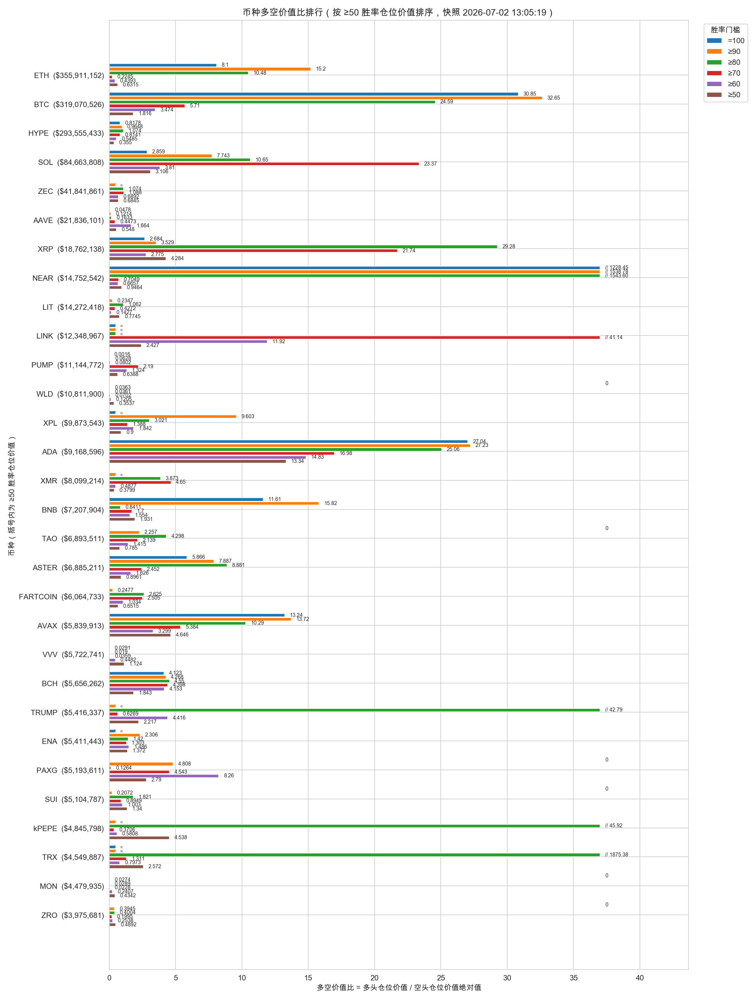

HYPE要回调了？聪明钱更多在做空。ADA还有未来吗？我仿佛看到了曙光「聪明钱追踪」
前面的时间里，我们对链上聪明钱的仓位进行了一定分析，发现目前做多仓位是大于做空仓位的。和牛市的最高点刚好是相反的。
然后我今天又突发奇想：其实我们可以再进一步计算每一个币种的多空仓位比值，于是就得到了这张图。

怎么看这张图
观察这张图，可以发现几个亮点。
首先，它从上到下的排序，是按照大于 50% 胜率仓位价值的总和来排的，也就是做多仓位价值加做空仓位价值的绝对值。
然后有一些币种只有做多仓位、没有做空仓位，所以多空价值比会变成无穷大。但是图里无穷大被展示成很短的长度，对于我们来说参考意义不是很大，因为它没有对应的做空仓位可以对比。
但如果只看这些不是无穷大的柱子，也可以观察到一些非常显眼的币种。再结合我们对一些币种行情的分析，可能就能看出一些端倪。
BTC、ETH 和 HYPE
首先看仓位绝对值最大的，就是排在最上面的老大和老二：ETH 和 BTC。
它们的仓位都是三十多个亿。第三名瞬间就少了很多，是 HYPE，将近三个亿。其他币种大多是几千万、一千多万左右，其实仓位价值都大差不差，而且仓位价值的比值分歧相对来说不是很大。
我们可以很显眼地看到有个 NEAR，这个币我不是很懂，这里就不多介绍。
然后我们一直很看好的 HYPE 呢？
一找发现它在这里，可以看到 HYPE 的价值比在 1 左右，默默无闻，和别的币形成了很大的对比。别的一些币，做多价值比做空价值高十几倍、几十倍。
ADA 的信号
其实我比较在意的是 ADA。
因为我经常看区块链日报的视频，他经常提到 ADA。然后我们从这次数据里看到 ADA 的多空比值，其实也是挺亮眼的。
希望 ADA 在未来有一个很亮眼的表现吧，到时候我们再回来看现在的视频。
妖币离远点
靠后的币虽然也有几个比值很大的，比如 PEPE、TRUMP、TRX，但这些币都太妖了，而且仓位价值比较小，没啥借鉴意义。
这也更加说明了它们的可怕之处，离远点。
最后
毕竟这只是一个时间节点的数据，真正怎么走，还是要多看几次数据。
本文仅记录个人研究与复盘，不构成任何投资建议。链上数据只能提供观察视角，请独立判断并控制仓位。